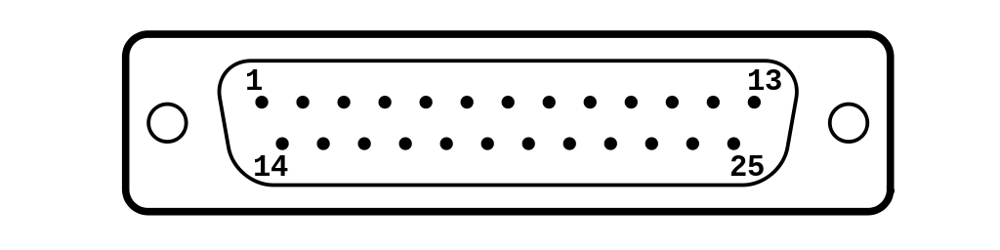

come RS-232 o impropriamente porta seriale), in informatica, elettronica e telecomunicazioni, indica uno standard EIA equivalente allo standard europeo CCITT V21/V24, che definisce un'interfaccia seriale a bassa velocità di trasmissione per lo scambio di dati tra dispositivi digitali.
dte=lato computer
dce=periferica
| NUMERO DEL PIN | NOME DEL PIN | CARATTERISTICA DEL PIN |
|---|---|---|
| 1 | Schermatura | |
| 2 | trasmissione dati | DTE → DCE |
| 3 | Ricezione dati | DCE → DTE |
| 4 | Request To Send | DTE → DCE |
| 5 | Clear To Send | DCE → DTE |
| 6 | Data Set Ready | DCE → DTE |
| 7 | Signal Ground | DCE → DTE |
| 8 | Data Carrier Detect | DCE → DTE |
| 9 | non noto | |
| 10 | non noto | |
| 11 | non assegnato | |
| 12 | Secondary Carrier Detect | DCD canale secondario |
| 13 | Secondary Clear To Send | CTS canale secondario |
| 14 | trasmissione dati secondario | TD canale secondario |
| 15 | Trasmitting Clock | DTE → DCE |
| 16 | Ricezione dati secondario | RD canale secondario |
| 17 | Receiving Clock | DCE → DTE |
| 18 | Local Loopback | DTE → DCE |
| 19 | Secondary Request To Send | RTS canale secondario |
| 20 | Data Terminal Ready | DTE → DCE |
| 21 | Remote Loopback | DTE → DCE |
| 22 | Ring Indicator | DCE → DTE |
| 23 | Data Signal Rate Selector | |
| 24 | Trasmitting Clock | DTE → DCE |
| 25 | test mode |